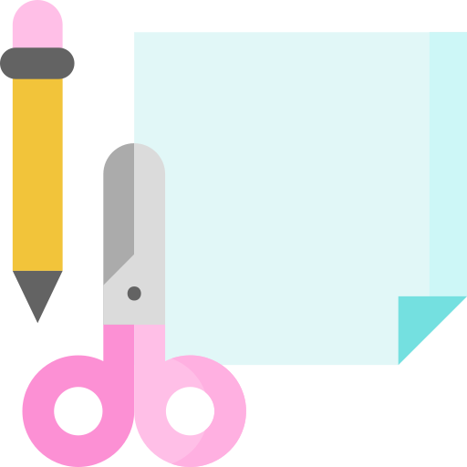
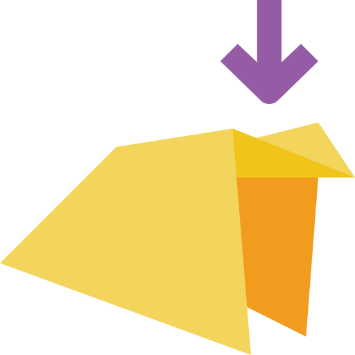

Du willst bei der proTechnicale Paper Plane Challenge mitmachen und weißt noch nicht so recht, wie man einen Papierflieger baut?
Dann haben wir hier ein paar Tipps und Tricks für dich.
Alles was man benötigt, sind:
 ein Stück Papier und ein bisschen Spaß beim Falten
Als Anregung könnt ihr euch hier eine beispielhafte Faltanleitung runterladen.
Laut Papierflieger-Champion, Kai Wicke, gibt
es den perfekten Flieger sowieso nicht.
Kai wurde 2006 Deutscher Meister im Papierflieger-Weitwurf mit einer
Rekordweite von 37,36 Metern.
"Es kommt darauf an, für welche Disziplin man faltet", erklärt Kai, "wenn man wie ich die größte Distanz erreichen will, dann muss man ein richtungsstabiles Flugzeug bauen. Dagegen brauchen die Teilnehmer, die auf die längste Flugzeit gehen, Flieger mit großen Tragflächen, weil möglichst viel Auftrieb benötigt wird. Und beim Kunstflug - da kann man dann noch hinten einreißen oder Ruder bauen, damit die Flugzeuge bestimmte Figuren fliegen."
Für mehr inspiration und Beiträge schaut bei Instagram, Facebook oder LinkedIn unter dem Hashtag #mintflieger vorbei!